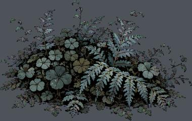
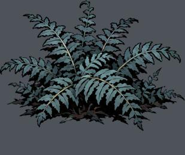
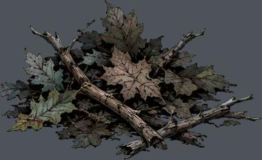
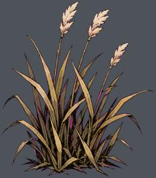
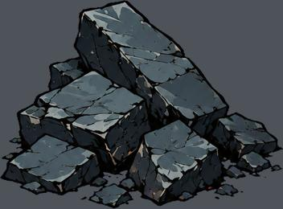
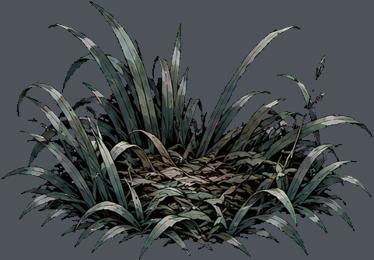
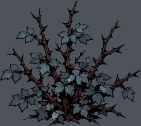
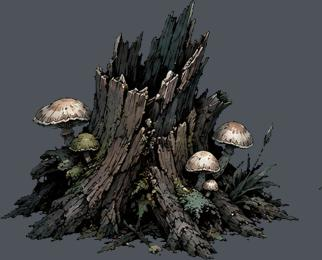
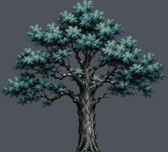
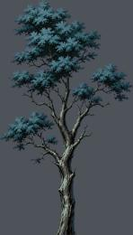

res://assets/style2/clover.png
实例 1100；运行画布高度 0.28–1.34 m
尺寸 [481, 302]；透明轮廓 (0, 1, 480, 301)
语义支点、占地、挂点尚需逐图标注下列高度是画布高度，不是实体净高。透明包围盒不等于脚点或占地。

实例 1100；运行画布高度 0.28–1.34 m
尺寸 [481, 302]；透明轮廓 (0, 1, 480, 301)
语义支点、占地、挂点尚需逐图标注
实例 604；运行画布高度 0.27–1.35 m
尺寸 [721, 606]；透明轮廓 (0, 2, 720, 512)
语义支点、占地、挂点尚需逐图标注
实例 247；运行画布高度 0.25–0.45 m
尺寸 [481, 294]；透明轮廓 (0, 1, 480, 293)
语义支点、占地、挂点尚需逐图标注
实例 217；运行画布高度 0.28–1.35 m
尺寸 [613, 700]；透明轮廓 (6, 6, 607, 697)
语义支点、占地、挂点尚需逐图标注
实例 8；运行画布高度 0.61–1.05 m
尺寸 [721, 532]；透明轮廓 (1, 1, 721, 530)
语义支点、占地、挂点尚需逐图标注
实例 2001；运行画布高度 0.25–1.35 m
尺寸 [481, 334]；透明轮廓 (2, 2, 479, 333)
语义支点、占地、挂点尚需逐图标注
实例 208；运行画布高度 0.27–1.35 m
尺寸 [721, 646]；透明轮廓 (1, 2, 719, 645)
语义支点、占地、挂点尚需逐图标注
实例 19；运行画布高度 0.61–1.10 m
尺寸 [481, 388]；透明轮廓 (1, 0, 481, 387)
语义支点、占地、挂点尚需逐图标注
实例 1237；运行画布高度 4.76–17.75 m
尺寸 [962, 874]；透明轮廓 (1, 1, 961, 874)
语义支点、占地、挂点尚需逐图标注
实例 1284；运行画布高度 4.76–17.75 m
尺寸 [546, 962]；透明轮廓 (0, 0, 545, 961)
语义支点、占地、挂点尚需逐图标注